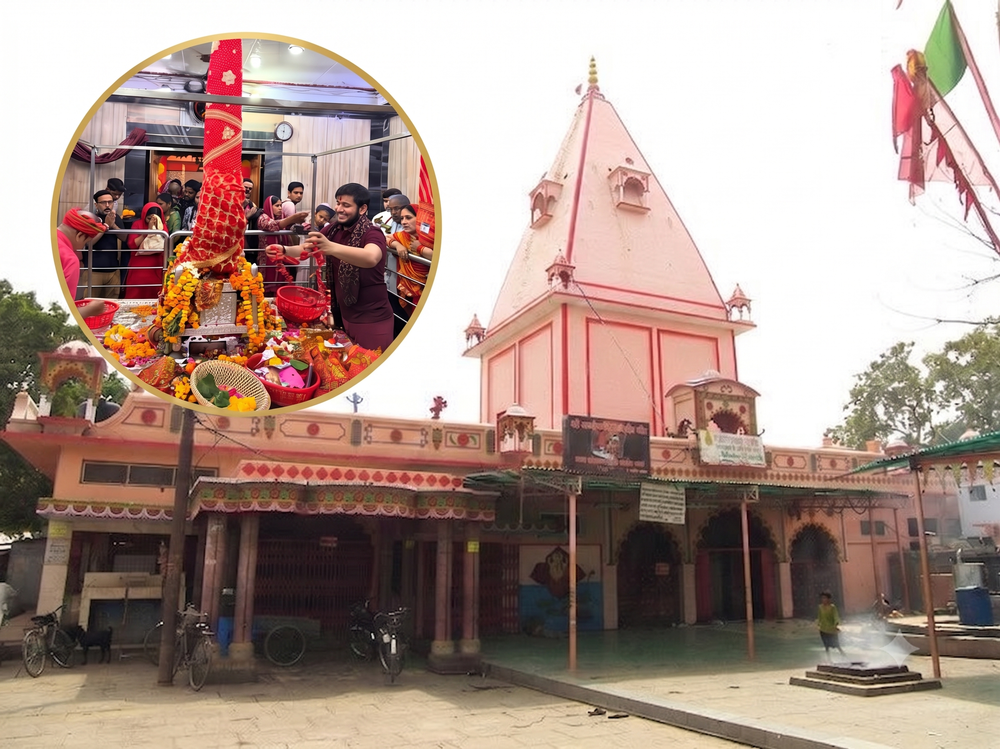

1.Shankari Devi Temple - SriLanka
Location: Trincomalee, Sri Lanka
Fallen Body Part: Groin / Pelvic region
Deity Form: Goddess Shankari Devi (Consort: Trikoneshwara)
Timings: 6:00 AM – 1:00 PM and 4:00 PM – 7:15 PM daily.
In-Depth Significance
The original structure was a sprawling, multi-tiered cliffside marvel known as the "Temple of a Thousand Pillars."
In 1622, Portuguese colonizers led by Constantino de Sá completely dismantled the temple, throwing much of its stone architecture into the sea. For centuries, only a lone pillar remained on the cliff.
A small, beautifully dedicated shrine was built nearby in the 20th century to keep the worship alive, smaller shrine nearby adjacent to the revered Trikoneshwara Shiva temple, preserving the intense spiritual vibrations of the original land.
Shankari Devi Temple in Trincomalee, Sri Lanka, is one of the 51 Shakti Peethas and the only one located outside the Indian subcontinent.
According to Hindu mythology, this is where Sati's hair fell during Shiva's cosmic dance of destruction. The temple is situated on a hill overlooking the beautiful Trincomalee harbor and has been a center of Hindu worship for over a thousand years.
Despite political challenges, the temple continues to attract devotees from around the world, representing the global reach of Hindu spiritual traditions.
Shankari Devi Temple Trincomalee is a highly revered temple with great spiritual significance. The temple is visited by thousands of devotees seeking blessings, peace, and spiritual fulfillment. Each visit to this sacred place is believed to bring divine grace and fulfillment of wishes.
Architecture: The current shrine follows clean, modern Tamil-Dravidian architecture. It sits adjacent to the reconstructed Trikoneshwara Shiva temple directly over a sheer ocean cliff.
Significance & Myth: This site represents the foundational, grounding root energy of the cosmos. It is highly sought out by devotees seeking to clear severe ancestral blockages or personal life crises.
Famous For: Its dramatic, sheer-cliff geography overlooking the Indian Ocean and its historical connection to King Ravana, who reportedly prayed here.
2.Kamakshi Amman Temple - Kanchipuram
Location: Kanchipuram, Tamil Nadu, India.
Fallen Body Part: Rear / Back part.
Deity Form: Goddess Kamakshi Devi (Consort: Lord Ekamranatha / Ruru Bhairava).
Timings: 5:30 AM – 12:15 PM and 4:00 PM – 9:00 PM daily.
In-Depth Significance
History: The original structure was a sprawling, multi-tiered cliffside marvel known as the "Temple of a Thousand Pillars." In 1622, Portuguese colonizers led by Constantino de Sá completely dismantled the temple, throwing much of its stone architecture into the sea. For centuries, only a lone pillar remained on the cliff. A small, beautifully dedicated shrine was built nearby in the 20th century to keep the worship alive.
Architecture: The current shrine follows clean, modern Tamil-Dravidian architecture. It sits adjacent to the reconstructed Trikoneshwara Shiva temple directly over a sheer ocean cliff.
Significance & Myth: This site represents the foundational, grounding root energy of the cosmos. It is highly sought out by devotees seeking to clear severe ancestral blockages or personal life crises.
Famous For: Its dramatic, sheer-cliff geography overlooking the Indian Ocean and its historical connection to King Ravana, who reportedly prayed here.
3.Shrinkala Temple - Pradmunyee
Location: Pandua, Hooghly District, West Bengal, India.
Fallen Body Part: Stomach / Torso region.
Deity Form: Goddess Srunkhala Devi (Consort: Lord Kapali).
Timings: 6:00 AM – 12:00 PM and 4:00 PM – 8:00 PM daily.
In-Depth Significance
History: The ancient temple complex was completely flattened during medieval conquests in the 14th century. A massive minar structure (the Bari Mosque and Minar) was built using the materials over the primary site. Because the original idol could no longer be kept at the site, worship was kept alive via local community traditions. Today, a new shrine houses the deity nearby.
Architecture: The historical site displays remnants of beautifully carved stone blocks with motifs of lotus and chain patterns. The new temple is built using modern Bengali concrete structures.
Significance & Myth: Srunkhala translates to a binding chain. It signifies the binding atomic cosmic force that keeps the universe from dissolving. It represents the binding love of a mother.
Famous For: Its historical mystery and the unique annual dynamic where local devotees gather during Magha Mandala festivals to offer special prayers near the ancient ruins.
4.Chamundeshwari Temple - Mysore
Location: Chamundi Hills, Mysuru, Karnataka, India.
Fallen Body Part: Hair / Locks.
Deity Form: Goddess Chamundeshwari (Consort: Lord Kaleshwar).
Timings: 7:30 AM – 2:00 PM, 3:30 PM – 6:00 PM, and 7:30 PM – 9:00 PM daily.
In-Depth Significance
History: Dating back to the 12th-century Hoysala rulers, the temple received its signature towering features under the Vijayanagara Empire and the subsequent Wodeyar dynasty of Mysuru. The Wodeyars treated Chamundeshwari as their primary royal protector deity.
Architecture: Features a massive 7-tier, highly decorated Dravidian Gopuram (entrance tower) filled with complex stone carvings of various deities. Halfway up the 1,000-stone staircase to the hill sits a globally famous, monolithic Nandi Bull carved from a single piece of black granite.
Significance & Myth: This is the battlefield site where the Goddess assumed her fierce form to slay the shape-shifting buffalo demon, Mahishasura.
Famous For: Being the absolute epicenter of the world-famous Mysuru Dasara festival, during which the Goddess's gold idol is paraded on a decorated royal elephant.
5.Jogulamba Devi Temple - Alampuram
Location: Alampur, Jogulamba Gadwal District, Telangana, India.
Fallen Body Part: Upper Teeth.
Deity Form: Goddess Jogulamba (Consort: Lord Balabrahmeswara).
Timings: 7:00 AM – 1:00 PM and 3:00 PM – 8:30 PM daily.
In-Depth Significance
History: Built originally by the Badami Chalukyas in the 7th century CE, this site was heavily damaged in 1390 CE during regional wars. Devotees successfully smuggled the primary idols out, placing them safely inside the fortified inner courtyard of the adjacent Bala Brahmeswara temple. They remained there for over 600 years until a grand, independent temple was constructed in 2005.
Architecture: Classic Chalukyan stone art. The Goddess is depicted in an intensely fierce posture, seated on a corpse, with a lizard, scorpion, bat, and owl adorning her crown.
Significance & Myth: Alampur is considered the Dakshina Kashi (Varanasi of the South). Jogulamba represents Yogini power in its rawest form, governing supreme control over absolute cosmic forces and decay.
Famous For: Being part of the Navabrahma temple cluster, displaying unparalleled 7th-century stone geometry.
6.Bhramaramba Mallikarjuna Temple - Srisailam
Location: Srisailam, Andhra Pradesh, India.
Fallen Body Part: Neck.
Deity Form: Goddess Bhramaramba (Consort: Lord Mallikarjuna Swamy).
Timings: 4:30 AM – 3:30 PM and 4:30 PM – 10:00 PM daily.
In-Depth Significance
History: The temple has deep links to ancient Puranic history and received extensive state patronage from the Satavahanas, Pallavas, Kakatiyas, and the Vijayanagara king Sri Krishnadevaraya, who built its massive stone outer walls.
Architecture: Designed as a heavy stone fort complex. The temple is unique because it is one of the rare places in the world that houses a Maha Shakti Peetha and a Jyotirlinga simultaneously.
Significance & Myth: To destroy Arunasura, a demon who held a boon preventing death by human, beast, or weapon, the Goddess released millions of multi-winged dark bees (Bhramari) from her body to sting him to death. Devotees still put their ears to a specific stone wall behind the inner sanctum to hear a continuous, soft buzzing sound.
Famous For: The Kumkumarchana ritual and its unique standing as a dual cosmic power center.
7.Mahalakshmi Temple - Kolhapur
Location: Kolhapur, Maharashtra, India.
Fallen Body Part: Eyes.
Deity Form: Goddess Ambabai / Mahalakshmi (Consort: Lord Kroshnayudha).
Timings: 5:00 AM – 11:30 PM daily.
In-Depth Significance
History: First constructed around 700 CE by the Chalukya dynasty, the temple was later expanded significantly by the Silahara and Yadava rulers. It survived multiple targeted campaigns by northern invaders due to local maratha forces hiding the main gemstone idol for decades in private residences.
Architecture: Built in the Hemadpanthi style using dark, dense local volcanic stone. The main deity is carved from solid black gemstone, weighing roughly 40 kg, holding a shield, a mace, and a fruit. Uniquely, the deity faces west.
Significance & Myth: Known as a Siddha Kshetra where desires manifest rapidly. The falling of the eyes here means the site represents the cosmic lens of illumination and supreme wisdom.
Famous For: Kiranotsav (The Sun Beam Festival). Twice a year (Jan/Feb and Nov), the rays of the setting sun cut precisely through the main temple doors, sequentially illuminating the feet, chest, and face of the deity over three days.
8.Ekveera Temple - Mahur
Location: Mahur, Nanded District, Maharashtra, India.
Fallen Body Part: Head / Crown.
Deity Form: Goddess Ekaveerika / Renuka Mata (Consort: Lord Krodhabhairava).
Timings: 5:00 AM – 9:00 PM daily.
In-Depth Significance
History: Mentioned heavily in the Devi Bhagavata Purana, this hill temple was a primary fort area fortified by the Yadava rulers of Deogiri and later cared for by the local Maratha clans.
Architecture: A rugged hill-top stone structure. The primary shrine houses a large, highly decorated face/head representation of Renuka Mata, keeping in line with the myth that the head fell here.
Significance & Myth: Mahur is the mythical birthplace of Lord Dattatreya (the unified avatar of Brahma, Vishnu, and Shiva). It holds an intense repository of tantric energy. The Goddess is worshipped here as the absolute source of personal courage and structural power.
Famous For: Huge pan-Indian crowds during the festivals of Navratri and Guru Purnima, alongside ancient natural water springs on the hill that never run dry.
9.Mahakali Temple - Ujjain
Location: Ujjain, Madhya Pradesh, India.
Fallen Body Part: Upper Lip.
Deity Form: Goddess Harsiddhi / Mahakali (Consort: Lord Mahakaleshwar).
Timings: 5:00 AM – 11:00 PM daily.
In-Depth Significance
History: Ujjain is an ancient meridian city of India. This temple was extensively renovated by the legendary King Vikramaditya, who reportedly offered his head to the Goddess multiple times out of intense devotion, only to be revived each time by her grace.
Architecture: The inner sanctum features a distinctive rock-cut image of the Goddess painted in deep vermillion. The standout architectural feature is the courtyard, which holds two massive, 15-foot-tall iron lamp towers (Deepasthambhas) containing 1,000 lamp alcoves each.
Significance & Myth: This peetha represents Annihilation—the absolute force that devours corrupted time and cosmic evil. It sits right down the road from the Mahakaleshwar Jyotirlinga temple.
Famous For: The breathtaking evening Deepotsav ritual, where agile temple priests climb the giant iron towers to light all 2,000 oil lamps simultaneously within minutes.
10.Puruhutika Temple - Pithapuram
Location: Pithapuram, Kakinada District, Andhra Pradesh, India.
Fallen Body Part: Left Hand / Foot.
Deity Form: Goddess Puruhutika Devi (Consort: Lord Kukkuteswara Swamy).
Timings: 5:30 AM – 12:30 PM and 4:30 PM – 8:30 PM daily.
In-Depth Significance
History: An ancient spiritual center referenced in the Skanda Purana. The temple grounds have been systematically maintained by the local Zamindars and royal houses of Pithapuram for centuries.
Architecture: Located inside the sprawling stone walls of the Sri Kukkuteswara Swamy temple. The Goddess stands tall as a carved stone idol, looking exquisitely graceful. The temple pond, known as Pada Gaya Sarovar, is a major stone-stepped architectural feature.
Significance & Myth: Lord Indra once committed a severe sin and prayed extensively at this site. The Goddess, pleased by his prayers, purified him. Hence, she is called Puruhutika ("she who is invoked by Indra"). The site is highly sacred for performing Shraddham (ancestral rites) due to its standing as a Pada Gaya.
Famous For: Ancestral clearing rituals and the uniquely carved Shiva shrine where Lord Shiva is worshipped in a form resembling a rooster (Kukkuta).
11.Biraja Temple - Jajpur
Location: Jajpur, Odisha, India.
Fallen Body Part: Navel (Nabhi).
Deity Form: Goddess Biraja / Girija (Consort: Lord Varaheshwar).
Timings: 6:00 AM – 1:00 PM and 3:00 PM – 9:00 PM daily.
In-Depth Significance
History: Jajpur was the historic capital of the Somavamshi dynasty. The temple was built during the 13th century and survived multiple attempts at desecration during regional wars due to the locals moving the main records safely away.
Architecture: Built using classic Kalingan stone architecture with intricate, vertical lines and an elevated stone base. The primary idol is a two-armed Mahishasura Mardini. With one hand, she pierces the buffalo demon with a trident, and with the other, she pulls his tail.
Significance & Myth: Because the cosmic navel fell here, this entire region is historically referred to as Nabhi Kshetra. It represents the direct umbilical origin of all earthly matter and creation.
Famous For: A highly unique 9-day chariot festival (Ratha Yatra) held for Goddess Biraja during Durga Puja—a rare instance where a female deity has her own massive moving chariot in Odisha.
12.Manikyamba Temple - Draksharamam
Location: Draksharamam, Konaseema District, Andhra Pradesh, India.
Fallen Body Part: Left Cheek.
Deity Form: Goddess Manikyamba (Consort: Lord Bhimeswara Swamy).
Timings: 5:30 AM – 12:00 PM and 3:00 PM – 8:00 PM daily.
In-Depth Significance
History: Constructed originally by the Eastern Chalukyan King Bhima I between the 9th and 10th centuries CE, the temple features inscription walls documenting centuries of royal endowments.
Architecture: Built as a massive, double-storied stone fortress. The main sanctum houses a staggering, 14-foot-tall crystal Shiva Lingam that rises from the ground floor up to the first floor. The shrine of Goddess Manikyamba sits in the beautifully columned inner courtyard.
Significance & Myth: It is one of the Pancharama Kshetras (five holy Shiva sites). Myth says Manikyamba was a local maiden of deep spiritual purity who directly merged into the energy of Sati's fallen cheek, leaving a highly accessible, protective motherly vibe.
Famous For: Massive celebrations during Maha Shivaratri, where lakhs of pilgrims visit to view the giant crystal lingam and the ancient stone pillar halls.
13.Kamakhya Temple - Guwahati
Location: Nilachal Hills, Guwahati, Assam, India.
Fallen Body Part: Womb and Yoni (Genitals).
Deity Form: Goddess Kamakhya (Consort: Lord Kameshwar).
Timings: 5:30 AM – 1:00 PM and 2:30 PM – 10:00 PM daily.
In-Depth Significance
History: Rebuilt in 1565 CE by King Chilarai of the Koch dynasty after surviving historical campaigns, this site is the ancient epicenter of Kulachara Tantra and Shaktism in South Asia.
Architecture: Showcases the distinct Nilachal style, featuring a regular polygonal dome base rising over a stone chamber. Inside the dark, subterranean inner sanctum, there is no idol. Instead, there is a natural stone fissure in the bedrock fed continuously by an underground fresh-water spring.
Significance & Myth: This site represents Creation in its purest, raw biological sense. Every year during the Ambubachi Mela (monsoon season), the temple closes completely for three days as the underground spring naturally turns iron-red, celebrating the menstruation cycle of Mother Earth.
Famous For: The Ambubachi Mela and being the absolute destination for advanced tantric practitioners worldwide.
14.Madhaveshwari - Prayagraj
Location: Alopibagh, Prayagraj, Uttar Pradesh, India.
Fallen Body Part: Fingers of the hand.
Deity Form: Goddess Alopi Madhaveswari (Consort: Lord Bhava).
Timings: 6:00 AM – 10:00 PM daily.
In-Depth Significance
History: Situated right next to the historic Triveni Sangam, this site has been mentioned in all primary Puranas for thousands of years as the guardian peetha of the holy confluence.
Architecture: It features a clean, white modern northern Indian temple tower structure. Inside the inner sanctum, there is no stone or metal idol. Instead, a wooden palanquin (Jhula) hangs gracefully over a smooth marble platform.
Significance & Myth: The name Alopi translates directly to "she who disappeared." It signifies that at this exact spot, the final parts of Sati's body vanished into formless energy, teaching devotees that the supreme mother is ultimately omnipresent and without physical limitation.
Famous For: Its proximity to the Kumbh Mela grounds, drawing tens of millions of saints and pilgrims who stop here to complete their holy dip vows.
15.Vaishnavi Devi Temple - Jwalamukhi
Location: Kangra Valley, Himachal Pradesh, India.
Fallen Body Part: Tongue.
Deity Form: Goddess Jwalamukhi / Siddhida (Consort: Lord Unmatta Bhairava).
Timings: 5:00 AM – 10:00 PM (Summer) and 6:00 AM – 9:00 PM (Winter).
In-Depth Significance
History: Regarded with deep awe for centuries, the Mughal Emperor Akbar once tried to extinguish the temple's natural flames by covering them with massive iron plates and diverting a canal of water over them. The flames broke through effortlessly. Realizing his error, Akbar walked bare-footed to the temple and offered a massive golden umbrella (Chhatra) to the Goddess.
Architecture: Set against the green hills of Kangra, the temple features a striking golden spire and a beautiful carved folding door gift from Maharaja Ranjit Singh. Inside, there is no idol. Worship is directed at nine continuous, natural blue gas flames breaking out through solid rock cracks.
Significance & Myth: The falling of the tongue represents the cosmic spark of speech, fire, and absolute truth. The flame burns continuously without any artificial fuel.
Famous For: The perpetual natural flames and the historical artifacts showing Akbar's offering.
16.Mangla Gauri Temple - Gaya
Location: Gaya, Bihar, India.
Fallen Body Part: Breasts.
Deity Form: Goddess Sarvamangala / Mangla Gauri (Consort: Lord Kapiladhara).
Timings: 6:00 AM – 1:00 PM and 4:00 PM – 8:00 PM daily.
In-Depth Significance
History: Documented extensively by early historical travelers and the Padma Purana, this site sits on a rocky hillock and has withstood centuries of regional shifts due to intense local community protection.
Architecture: Reached by climbing a flight of stone stairs up the hill. The temple is compact and ancient, housing breast-shaped natural stone formations that are lovingly anointed with vermillion and ghee daily.
Significance & Myth: This Peetha represents Nourishment, life sustenance, and deep maternal protection. Because Gaya is the primary global center for performing crucial ancestral liberation rites (Pitru Paksha Shradh), a visit here is traditionally required to successfully seal the blessings of one's lineage.
Famous For: Its deep, quiet spiritual aura and its crucial role in ancestral liberation ceremonies.
17.Vishalakshi Temple - Varanasi
Location: Mir Ghat, Varanasi (Kashi), Uttar Pradesh, India.
Fallen Body Part: Earrings / Eyes.
Deity Form: Goddess Vishalakshi (Consort: Lord Kala Bhairava).
Timings: 5:00 AM – 9:00 PM daily.
In-Depth Significance
History: Tucked deeply inside the oldest living streets of Varanasi, this temple has stood in close proximity to the historic Kashi Vishwanath temple for millennia, surviving multiple structural changes over various eras.
Architecture: Features a distinct South Indian stone architectural design right in the heart of Varanasi, complete with a beautifully carved granite ceiling displaying cosmic zodiac signs and a towering internal prayer hall.
Significance & Myth: Vishalakshi means "she who has large, wide eyes." Sitting inside Kashi (the city of liberation), this peetha grants immense mental clarity and detaches seekers from earthly illusions.
Famous For: The vibrant festival of Kajali Teej, where local and visiting women sing devotional folk melodies and pray for the longevity of their households.
18.Sharada Temple - Kashmir
Location: Sharda, Neelum Valley, Pakistan-administered Kashmir (POK).
Fallen Body Part: Right Hand / Shoulder.
Deity Form: Goddess Sharada (Consort: Lord Shandilya).
Timings: Currently inaccessible for regular religious pilgrimage due to geopolitical boundaries; guarded as a protected historical ruin site.
In-Depth Significance
History: Between the 6th and 12th centuries CE, this site was not just a temple, but one of the world's most premier universities and manuscript storehouses, pioneering the development of the Sharada script. Great scholars like Adi Shankaracharya and Ramanujacharya traveled thousands of miles here to access its unmatched library. Following regional conflicts post-1947, the temple became inactive and now lies in a sensitive geopolitical zone.
Architecture: A magnificent, roofless stone ruin sitting atop a high hill base. It features immense, plain stone walls, grand stone steps, and a unique architectural style reminiscent of ancient Kashmiri temple geometry (like Martand Sun Temple).
Significance & Myth: This site represents the supreme cosmic throne of Wisdom, Logic, and Learning. It remains an eternal symbol of intellectual heritage.
Famous For: ts historical university standing and its poignant status as a grand, silent ruin.